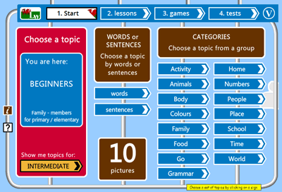

1
1
10

Click on the "1. Start" button in the top navigation bar - that brings you to this topic selection screen. Here you will see that the topic selection is divided up in different ways:
Choose either Beginner or Intermediate level topics in the red sign. Now the categories for that level will load. Click on any sign to view the topics that fit the category description. For example, if you choose the Beginner category 'Animals' you will see a choice of two topics: "Animals - pets" and "Animals - farm". When you click on the name of the topic, the pictures, writing and spoken language for that topic will load (once the topic has loaded it will be available for all activities and will not have to be loaded again).
With the topic loaded you can choose whether to proceed to the lesson for that topic, or to jump straight to the games (tablet users are taken straight to the lesson when they choose a topic).